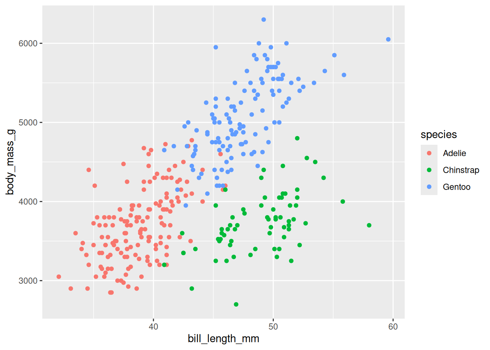
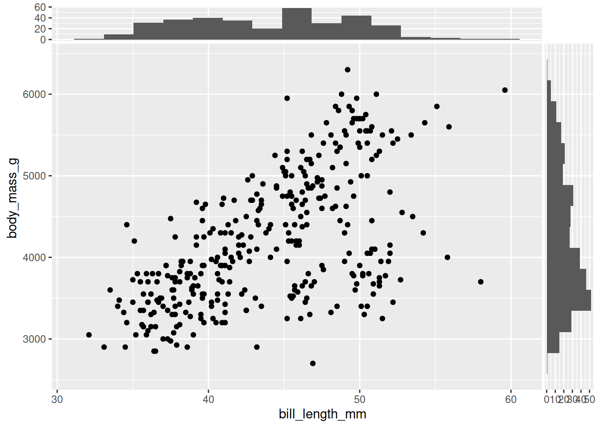
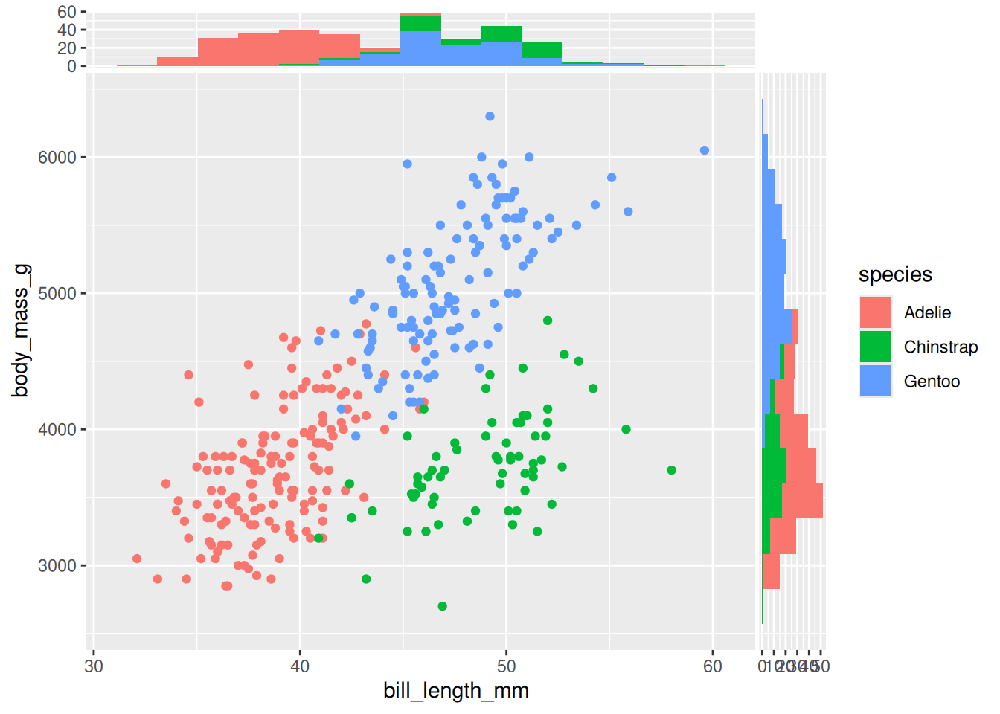
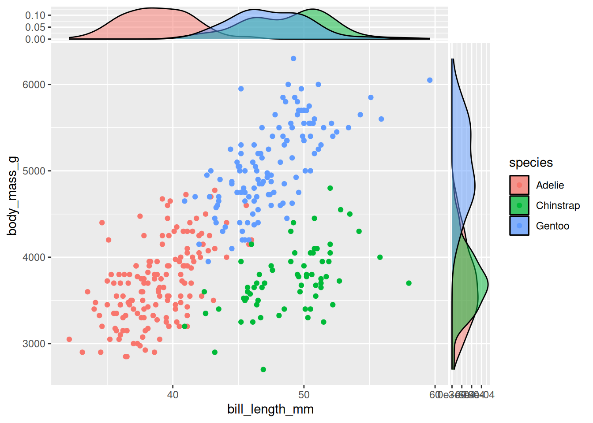
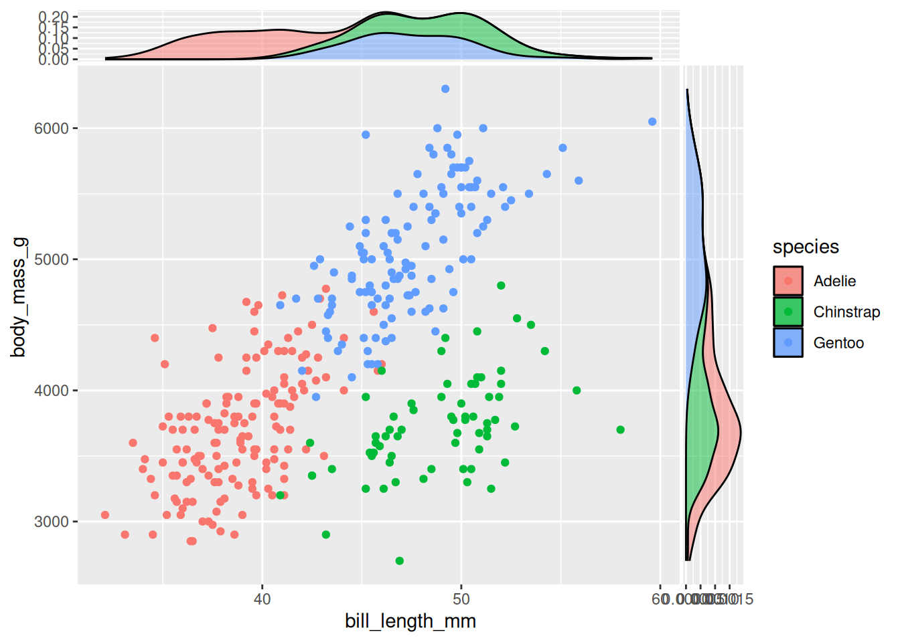
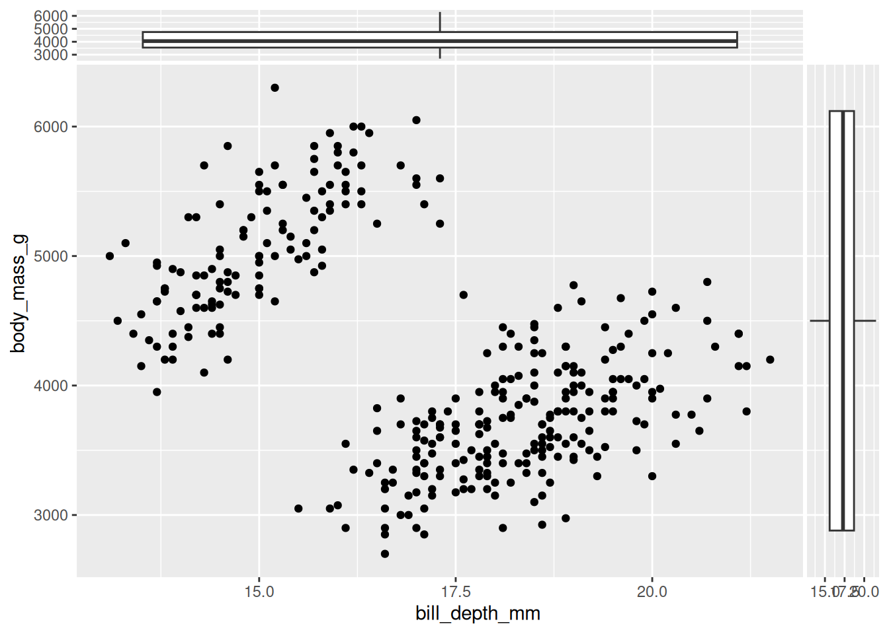
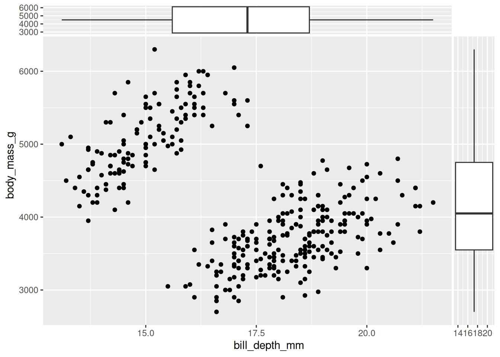
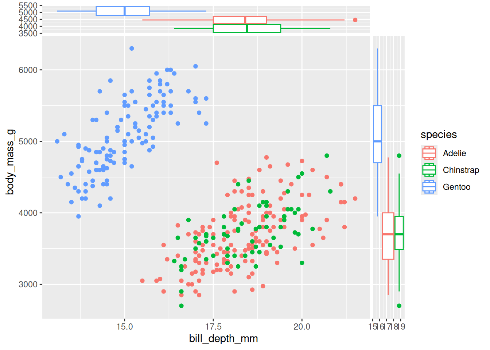
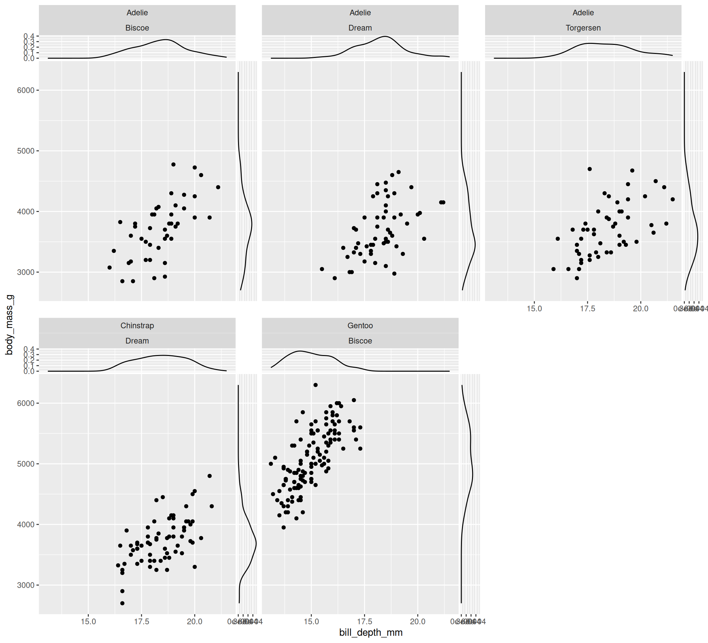
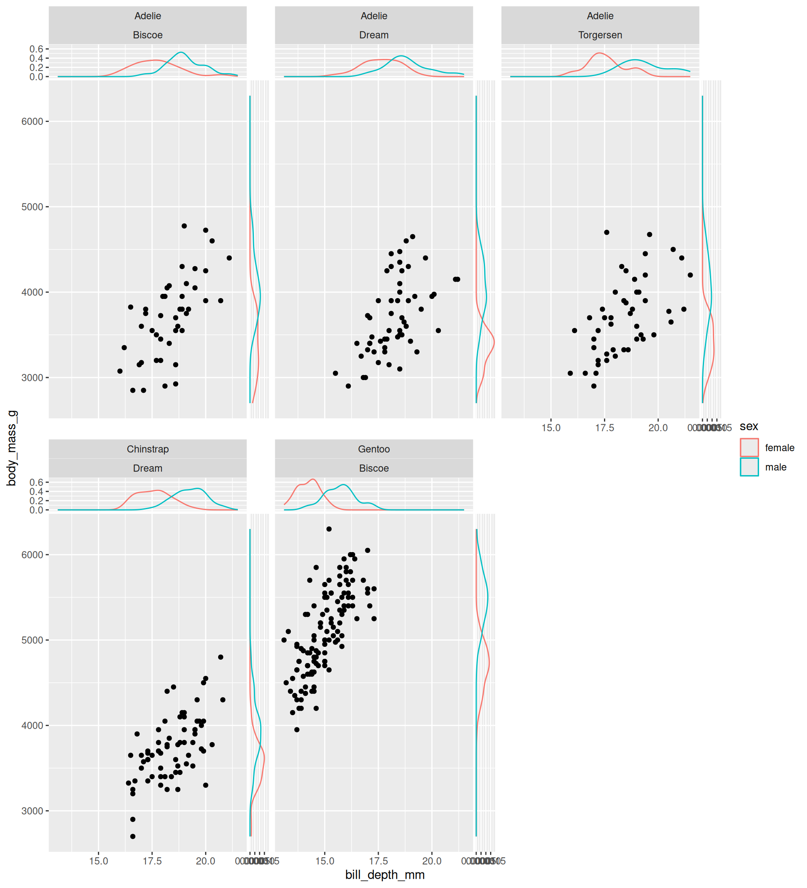

# install the CRAN version
utils::install.packages("ggside")
# install the latest development version (from Github)
devtools::install_github("jtlandis/ggside")Marginal plots with ggside
marginal plots
ggplot2
ggside
A marginal plot is a combination of a bivariate plot (typically a scatter plot) and one/two univariate plots (density, boxplot, dotplot, …). It is an interesting plot since you can inspect both the relationship between two variables and the distribution of each variable.
Even if there are several options to obtain a marginal plot, here I exploit ggside, an useful extension for ggplot2.
Note: ggside can be used also for adding univariate plot(s) to a generic ggplot.
Install and load ggside
ggside can be installed from CRAN (latest stable version) or from github (development version):
library(ggplot2)
library(ggside)The message prompts that ggside overwrites the +.gg method of ggplot2, adding functionalities for plotting on the two margins of a ggplot2 object.
Detailed information on ggside are available on the official github repository and on the CRAN package webpage.
The penguins dataset
I exploit below the penguins dataset available in the palmerpenguins package.
install.packages("palmerpenguins")penguins is a tibble with 344 rows and 8 variables, containing measurements for penguin species, island in Palmer Archipelago, size (flipper length, body mass, bill dimensions), and sex. You can read more information on the dataset inspecting the related help page:
library(palmerpenguins)
help("penguins")Marginal plot
Here is a classical scatterplot using bill_length_mm (bill length, millimeters) on the horizontal axis and body_mass_g (body mass in grams) on the vertical axis, enriching the plot using the color information for the species:
ggplot(data = penguins,
aes(x = bill_length_mm, y = body_mass_g)) +
geom_point(aes(col = species))
You can add a marginal plot for the x (y) variable exploiting the set of geom_xside* (geom_yside*) functions. The available functions, listed in the following table, inherit from the original ggplot2 functions, differing only in the position of the final plot:
| functions | graphical representation |
|---|---|
| geom_xsidebar geom_ysidebar |
barplot |
| geom_xsideboxplot geom_ysideboxplot |
boxplot |
| geom_xsidedensity geom_ysidedensity |
density plot |
| geom_xsidefreqpoly geom_ysidefreqpoly |
frequency polygon |
| geom_xsidehistogram geom_ysidehistogram |
histogram |
| geom_xsideline geom_ysideline |
line plot |
| geom_xsidepoint geom_ysidepoint |
dotplot |
| geom_xsidesegment geom_ysidesegment |
dotplot |
| geom_xsidetext geom_ysidetext |
text |
| geom_xsidetile geom_ysidetile |
tile plot |
| geom_xsideviolin geom_ysideviolin |
violin plot |
The choice of the plot to use on the margins depends on the type of data and on your taste.
Some examples
Two histograms can be added to the previous scatterplot exploiting the functions geom_xsidehistogram and geom_ysidehistogram (the bins argument is the same of geom_histogram for setting the number of bins):
ggplot(data = penguins,
aes(x = bill_length_mm, y = body_mass_g)) +
geom_point() +
geom_xsidehistogram(bins = 15) +
geom_ysidehistogram(bins = 15)
It is clearly possible to add only one side plot using only one of the two functions above. Color can be used to enrich the plot representing information of another variable, using the same syntax of ggplot2 function:
ggplot(data = penguins,
aes(x = bill_length_mm, y = body_mass_g)) +
geom_point(aes(col = species)) +
geom_xsidehistogram(aes(fill = species), bins = 15) +
geom_ysidehistogram(aes(fill = species), bins = 15)
Densities are useful alternative to histograms, the alpha argument is here used to change the transparency of the geometrical objects:
ggplot(data = penguins,
aes(x = bill_length_mm, y = body_mass_g)) +
geom_point(aes(col = species)) +
geom_xsidedensity(aes(fill = species), alpha = 0.5) +
geom_ysidedensity(aes(fill = species), alpha = 0.5)
Stacked densities can be obtained setting the classical position argument to stack:
ggplot(data = penguins,
aes(x = bill_length_mm, y = body_mass_g)) +
geom_point(aes(col = species)) +
geom_xsidedensity(aes(fill = species), alpha = 0.5, position = "stack") +
geom_ysidedensity(aes(fill = species), alpha = 0.5, position = "stack")
Marginal boxplots deserve a note. “Perpendicular” boxplots are plotted by default (vertical for the x variable and horizontal for the y variable):
ggplot(data = penguins,
aes(x = bill_depth_mm, y = body_mass_g)) +
geom_point() +
geom_xsideboxplot() +
geom_ysideboxplot()
A more useful representation can be obtained changing the orientation of the side boxplots through the orientation arguments:
ggplot(data = penguins,
aes(x = bill_depth_mm, y = body_mass_g)) +
geom_point() +
geom_xsideboxplot(orientation = "y") +
geom_ysideboxplot(orientation = "x")
Using a qualitative variable (species in the example below) provides parallel boxplots, that are really useful for a quick inspection of differences in the conditional distributions:
ggplot(data = penguins,
aes(x = bill_depth_mm, y = body_mass_g, col = species)) +
geom_point() +
geom_xsideboxplot(orientation = "y") +
geom_ysideboxplot(orientation = "x")
Finally, the set of geom_xside* and geom_yside* functions can be used also in case of panel plots obtained exploiting facet_wrap and facet_grid. Here is a simple example using facet_wrap for subsetting data according to the levels of the variables species and island and adding conditional densities at the two side of scatterplot of bill_depth_mm and body_mass_g:
ggplot(data = penguins,
aes(x = bill_depth_mm, y = body_mass_g)) +
geom_point() +
geom_xsidedensity() +
geom_ysidedensity() +
facet_wrap(vars(species, island)) 
Again, color can be exploited to compare conditional distributions. The following code represents two densities at each side of the main plot, each one showing the distribution of one of the two levels of sex of penguins:
ggplot(data = tidyr::drop_na(penguins, sex),
aes(x = bill_depth_mm, y = body_mass_g)) +
geom_point() +
geom_xsidedensity(aes(col = sex)) +
geom_ysidedensity(aes(col = sex)) +
facet_wrap(vars(species, island)) 
Note: since there are missing values for the sex variable, I exploit the drop_na function (tidyr package) to drop rows containing missing values in such variable (you need to install tidyr to test the last chunk of code).
Finally, additional functions are available in ggside for setting options on the x and y scales: refer to the official documentation for the list of functions.